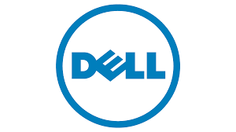
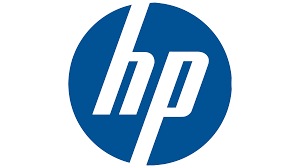
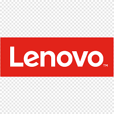
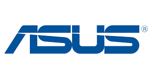
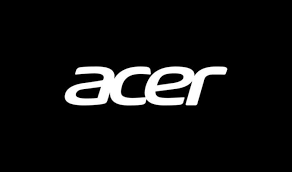
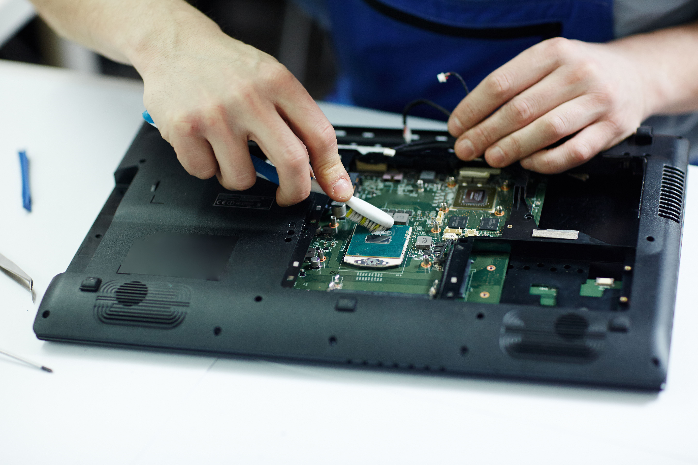
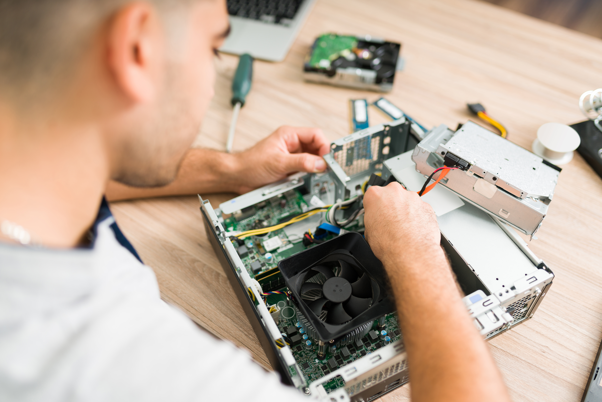
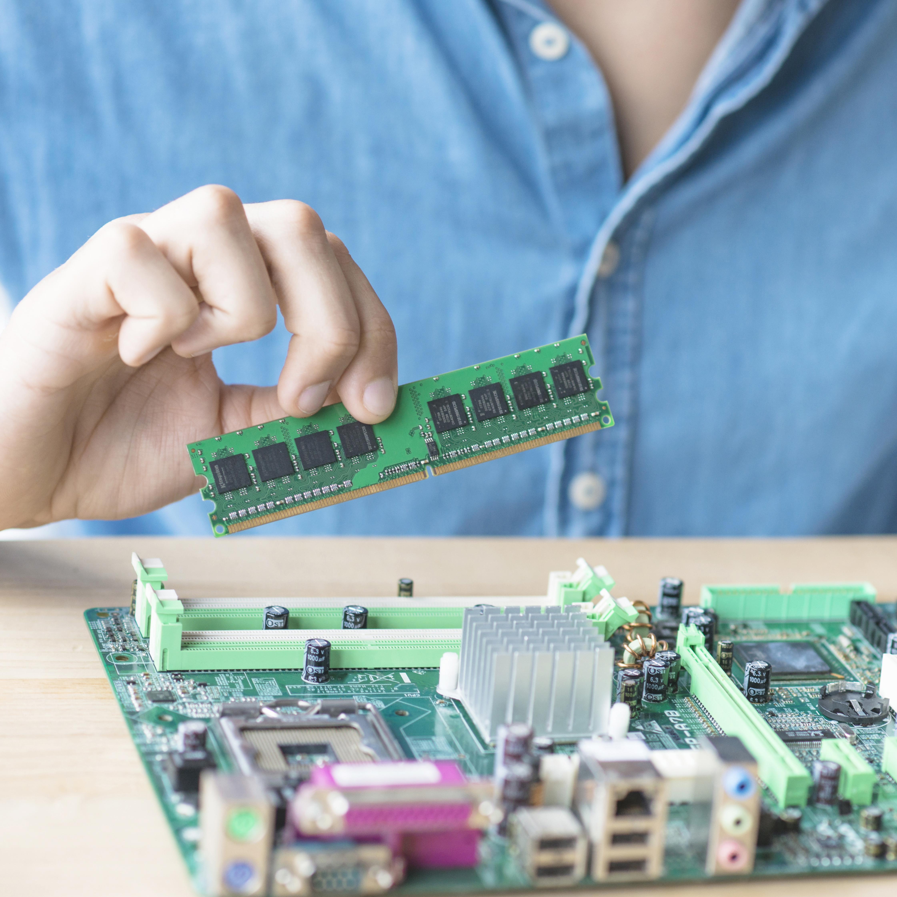
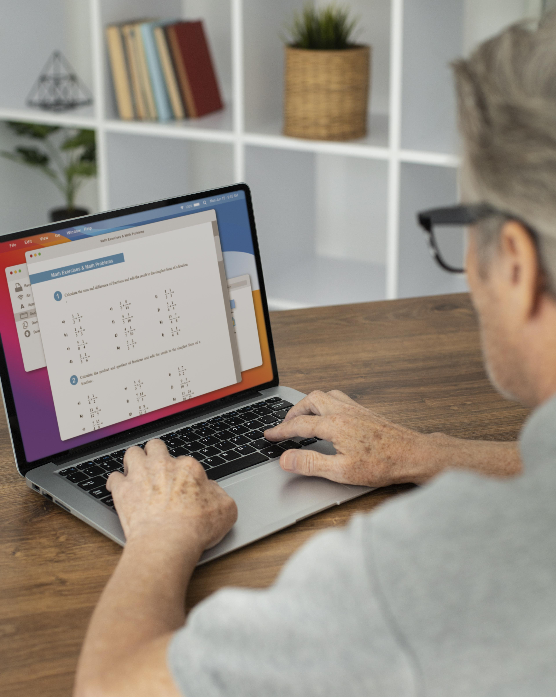
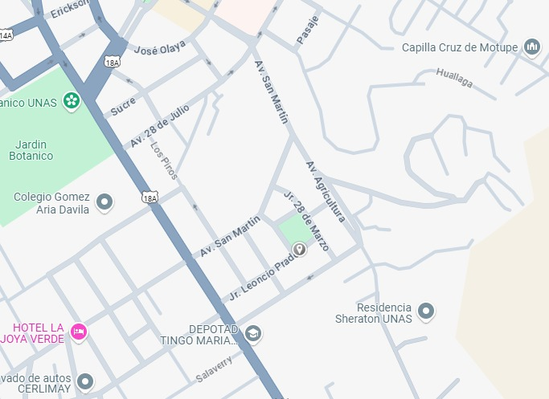

Marcas con las que trabajamos






Expertos en reparación, mantenimiento y optimización de equipos informáticos. Soluciones rápidas y profesionales para mantener tu tecnología funcionando al máximo rendimiento.
Clientes satisfechos
Reparaciones exitosas
Años de experiencia

Servicio garantizado
Técnicos certificados
Reparación rápida





Ofrecemos soluciones tecnológicas integrales para mantener tus equipos funcionando a su máximo potencial
Soluciones para todo tipo de problemas en laptops, desde reemplazo de hardware hasta recuperación de archivos.
Diagnóstico y reparación de ordenadores de escritorio, optimizando su rendimiento y resolviendo fallas.
Potencia tu equipo con las mejores actualizaciones de hardware adaptadas a tus necesidades específicas.
Protección integral para tus dispositivos contra amenazas digitales y prevención de pérdida de datos.
Instalación y configuración de redes para hogares y pequeñas empresas con soporte técnico especializado.
Mantenimiento profesional para extender la vida útil de tus equipos y prevenir fallas antes de que ocurran.
No esperes a que empeore. Contacta con nuestros expertos para una solución rápida y eficiente.
Somos más que un servicio técnico, somos tus aliados tecnológicos

Años de Experiencia
Nuestro equipo está formado por profesionales certificados con amplia experiencia en el sector tecnológico.
Entendemos que necesitas tu equipo lo antes posible. Trabajamos de forma ágil para minimizar el tiempo de reparación.
Todos nuestros trabajos están respaldados por garantía, asegurando la calidad y durabilidad de las reparaciones.
Ofrecemos servicios de alta calidad a precios justos y transparentes, sin costos ocultos ni sorpresas.
Algunos ejemplos de los trabajos que hemos realizado para nuestros clientes





Experiencias reales de personas que han confiado en nuestros servicios
"Increíble servicio. Mi laptop dejó de funcionar de repente y pensé que había perdido todos mis archivos. UNATECH no solo la reparó en tiempo récord, sino que también recuperó todos mis datos importantes. ¡Altamente recomendados!"

"Profesionales en todo sentido. Mi computadora estaba extremadamente lenta y después del mantenimiento que le realizaron funciona como nueva. El diagnóstico fue rápido y preciso. Muy recomendado su servicio de optimización. Volveré para futuros mantenimientos."

"Configuraron toda la red de mi pequeña empresa y ahora tenemos una conexión estable y segura. El servicio post-venta ha sido excepcional, siempre disponibles para resolver dudas. Han sido fundamentales para nuestra transición al trabajo híbrido."
"Mi laptop gaming presentaba problemas de sobrecalentamiento y rendimiento. El equipo de UNATECH identificó el problema rápidamente, reemplazó el sistema de refrigeración y optimizó el sistema. Ahora puedo jugar sin problemas. Servicio de primera clase."
Respuestas a las preguntas más comunes sobre nuestros servicios
El tiempo de reparación varía según el problema. Las reparaciones simples pueden tomar entre 24-48 horas, mientras que las más complejas pueden requerir de 3 a 5 días. Siempre te proporcionamos un estimado de tiempo cuando recibimos tu equipo.
Sí, todos nuestros servicios de reparación y piezas reemplazadas tienen garantía. Dependiendo del servicio, la garantía puede variar de 30 días a 1 año. Te proporcionamos los detalles específicos al momento de entregarte tu equipo reparado.
En muchos casos, sí es posible. Tenemos herramientas y técnicas especializadas para recuperar datos de discos duros con diversos tipos de daños. Sin embargo, el éxito depende del nivel de daño. Realizamos un diagnóstico previo para determinar las posibilidades de recuperación.
Depende de varios factores, como la antigüedad del equipo y tus necesidades específicas. En muchos casos, una actualización de componentes clave (como agregar un SSD o aumentar la RAM) puede extender significativamente la vida útil de un equipo y mejorar su rendimiento. Realizamos una evaluación personalizada para recomendarte la mejor opción.
Es recomendable realizar mantenimiento preventivo al menos una vez al año. Sin embargo, hay señales que indican que tu equipo lo necesita antes: ruidos inusuales, sobrecalentamiento, lentitud, apagados inesperados o si el último mantenimiento fue hace más de un año.
¡Sí! Nuestros técnicos están certificados para trabajar con productos Apple. Ofrecemos servicios de reparación y mantenimiento para MacBook, iMac, Mac Mini y otros dispositivos de la marca. Contamos con las herramientas especializadas necesarias para estos equipos.
Estamos aquí para ayudarte con cualquier problema tecnológico
Jr. Leoncio Prado 354
Lunes a Viernes: 9:00 AM - 11:00 PM
Sábados: 10:00 AM - 2:00 PM
